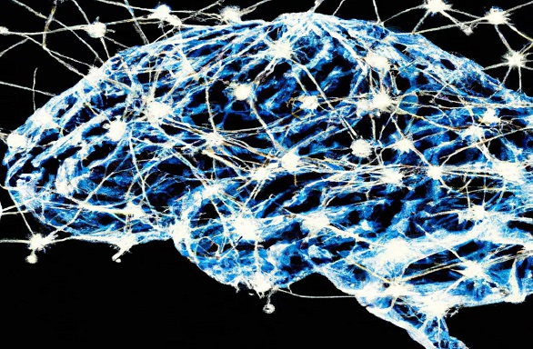
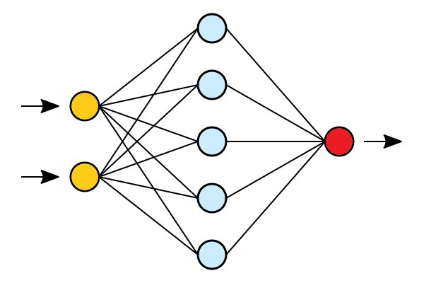

Machine Learning is a subfield of Artificial intelligence
"Learning machines to imitate human intelligence"
Machine Learning (ML)
Traditional programming uses algorithms to produce results from data:
Data + Algorithms = Results
Machine learning creates algorithms from data and results:
Data + Results = Algorithms
Neural Networks (NN)
Neural Networks is:
A programming technique
A method used in machine learning
A software that learns from mistakes
Neural Networks are based on how the human brain works:
Neurons are sending messages to each other. While the neurons are trying to solve a problem (over and over again), it is strengthening the connections that lead to success and diminishing the connections that lead to failure.

Neural NetworksNeural Networks
Perceptrons
The Perceptron defines the first step into Neural Networks.
It represents a single neuron with only one input layer, and no hidden layers.
Perceprton
Learn how to program a perceptron.
Neural Networks
Neural Networks are Multi-Layer Perceptrons.

Neural Networks
In its simplest form, a neural network is made up from:
An input layer (yellow)
A hidden layer (blue)
An output layer (red)
In the Neural Network Model, input data (yellow) are processed against a hidden layer (blue) before producing the final output (red).
The First Layer:
The yellow perceptrons are making simple decisions based on the input. Each single decision is sent to the perceptrons in the next layer.
The Second Layer:
The blue perceptrons are making decisions by weighing the results from the first layer. This layer make more complex decisions at a more abstract level than the first layer.
Deep Neural Networks
Deep Neural Networks are made up of several hidden layers of neural networks that perform complex operations on massive amounts of data.
Each successive layer uses the preceding layer as input.
For instance, optical reading uses low layers to identify edges, and higher layers to identify letters.
Neural Networks
In the Deep Neural Network Model, input data (yellow) are processed against a hidden layer (blue) and modified against more hidden layers (green) to produce the final output (red).
The First Layer:
The yellow perceptrons are making simple decisions based on the input. Each single decision is sent to the perceptrons in the next layer.
The Second Layer:
The blue perceptrons are making decisions by weighing the results from the first layer. This layer make more complex decisions at a more abstract level than the first layer.
The Third Layer:
Even more complex decisions are made by the green perceptrons.
Deep Learning (DL)
Deep Learning is a subset of Machine Learning.
Deep Learning is responsible for the AI boom of the last years.
Deep learning is an advanced type of ML that handles complex tasks like image recognition.